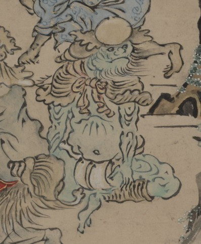

貝の化物。肌は緑色で、鬼のように見える。頭頂に玉のようなものがついた、貝の形をした兜をかぶり、貝殻でできたような肩当てをつけている。褌をしめ、毛皮の脚絆をつけ座っている。
出典：親書誌：U426_nichibunken_0151：武家はんじょう；ブケハンジョウ／日付：2010／資源識別子：U426_nichibunken_0151_0001_0000
Copyright (c)2010- International Research Center for Japanese Studies, Kyoto, Japan. All rights reserved.